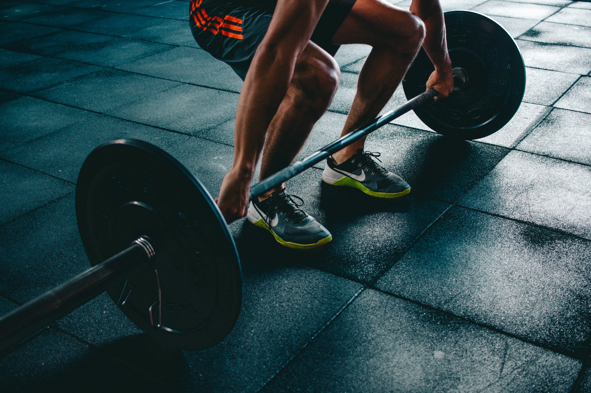

Τι είναι η άθληση;
Άθληση είναι η προσπάθεια βελτίωσης της φυσικής κατάστασης του οργανισμού μέσω της συστηματικής σωματικής άσκησης. Η αντίληψη ότι η σωματική άσκηση συντείνει στη διατήρηση της υγείας ανάγεται στην αρχαιότητα, ενώ η επιστημονική της εγκυρότητα κατοχυρώθηκε τις τελευταίες δεκαετίες. Στατιστικά στοιχεία από μελέτες ινστιτούτων ερευνών τεκμηριώνουν τις απόψεις καρδιολόγων, επιδημιολόγων και ψυχιάτρων ότι όποιος ασκείται έχει λιγότερες πιθανότητες να παρουσιάσει καρδιοπάθειες, καρκίνο και ψυχικά νοσήματα. Το βασικό άθλημα θα πρέπει να συμπληρώνεται και από άλλες ασκήσεις, ώστε η εκγύμναση του σώματος να είναι ολοκληρωμένη.
Τα οφέλη της Άθλησης
Ο αθλητισμός και η υγεία του σώματος και της ψυχής, πάνε μαζί. Δεν είναι τυχαίο που οι αρχαίοι μας πρόγονοι έλεγαν νους υγιής εν σώματι υγιή. Σήμερα η επίδραση του αθλητισμού και της ψυχαγωγίας στην υγεία μας, είναι ζήτημα επίκαιρο όσο ποτέ άλλοτε.Η συστηματική σωματική εξάσκηση βοηθά τον οργανισμό μας σε πολύ μεγάλο βαθμό και σε πολλά επίπεδα. Είναι περισσότερο οικονομικά και ψυχικά αποδοτική και συμφέρουσα από τις άλλες μας δραστηριότητες που μας κάνουν να τρέχουμε καθημερινά. Η συστηματική σωματική εξάσκηση μειώνει τον κίνδυνο εκδήλωσης καρδιακών παθήσεων και της αρτηριακής πίεσης. Βελτιώνει την ψυχολογία, μειώνει το άγχος, την ένταση και την κατάθλιψη και βοηθά στο να διατηρήσουμε υγιή οστά, μυς και αρθρώσεις .Όταν αποφασίσουμε ότι πρέπει να εφαρμόσουμε ένα πρόγραμμα συστηματικής σωματικής εξάσκησης είναι σημαντικό αυτό να γίνει προσεκτικά και προγραμματισμένα. Απότομες εξάρσεις μπορεί να έχουν τα αντίθετα αποτελέσματα.

Άθληση και Ψυχική Υγεία
Ο αθλητισμός συνεισφέρει όπως αναφέρθηκε παραπάνω στην ψυχική μας υγεία. Η συμβολή του στον τομέα αυτό είναι τεράστια για τον άνθρωπο (π.χ. μπορεί να βοηθήσει άτομα που πάσχουν από κατάθλιψη και αναζωογωνεί το συναισθηματικό μας κόσμο).Το στρες υποχωρεί πιο εύκολα μετά από μια αθλητική δραστηριότητα. Η μείωση της έντασης των μυών και η αύξηση του καρδιακού ρυθμού που συνοδεύουν τη σωματική άσκηση δημιουργούν μια γενικότερη χαλάρωση και συμβάλλουν στην εγρήγορση του οργανισμού. Αυτό μας βοηθά να βρούμε λύσεις στα προβλήματα που μας βασανίζουν. Η εξωτερίκευση της έντασης όταν κάνουμε κάποια αθλητική δραστηριότητα ή άλλη ρυθμική σωματική δραστηριότητα, μειώνει τον εκνευρισμό που πιθανόν να μας έχει κυριεύσει κατά τη διάρκεια μιας δύσκολης μέρας φορτωμένης με πολλές καταστάσεις που μας προκαλούν στρες. Έτσι μειώνεται ο κίνδυνος να ξεσπάσουμε νευριασμένα πάνω σε άτομα της οικογένειας μας ή σε φίλους μας.
Τρόποι άθλησης
Ο αθλητισμός μπορεί να πάρει πέντε μορφές, είτε ως ερασιτεχνικός, είτε ως επαγγελματικός, είτε ως μαζικός αθλητισμός, είτε ως φυσικές δραστηριότητες, είτε με την μορφή των παιχνιδιών.
- Βάρη
- Περπάτημα
- Κολύμβηση
- Αερόβια άσκηση
- Τρέξιμο (όλα τα είδη)
- Κάποιο άθλημα(π.χ Ποδόσφαιρο, Μπασκετ)